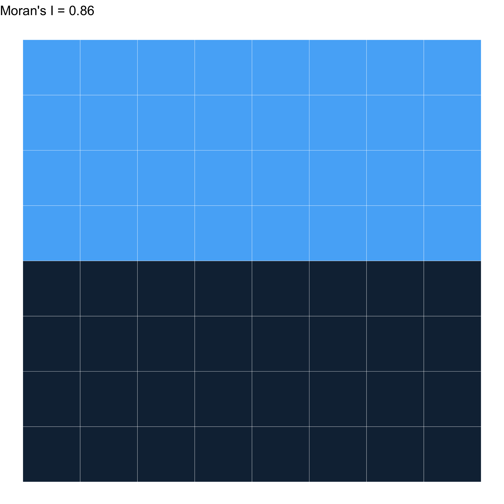
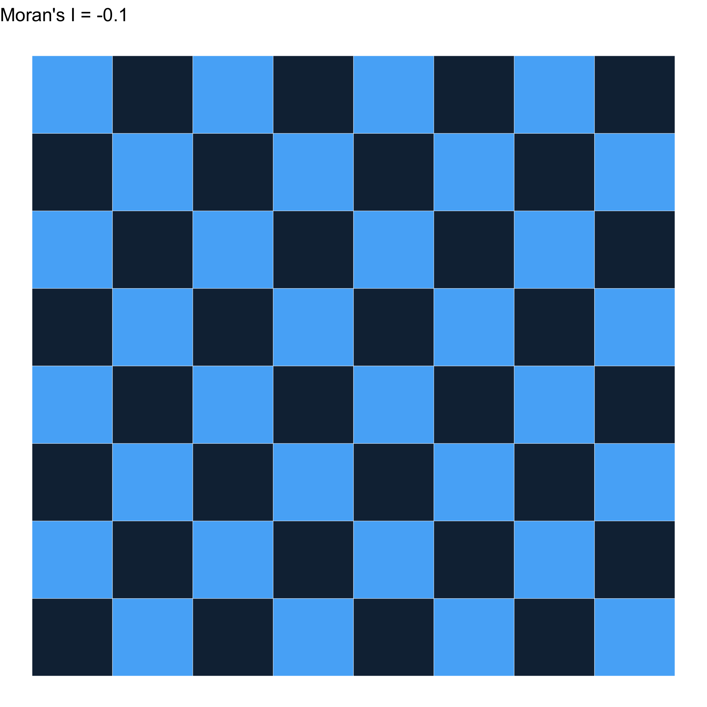

08:00
Individual vs. Context vs. Space vs. Place
EPID 684
Spatial Epidemiology
University of Michigan School of Public Health
Jon Zelner
jzelner@umich.edu
epibayes.io

Today’s Theme

How can we characterize the relative importance of individual vs. contextual drivers of variation?
Goals
Introduce and discuss two approaches to measuring clustering of outcomes across places.
Understand what it means to include space in models of between-place variation.
Agenda
Walk through the intraclass correlation example from (Merlo et al. 2005)
What is Moran’s I?
Discuss what we learn from focusing on places vs. spaces as in (Chaix, Merlo, and Chauvin 2005).
If time: Time to get started on Destination presentations
Some warm up questions üòÖ
What is the point of using a global clustering measure like intraclass correlation?
What struck you as interesting or important in these readings?
What was confusing or needs clarification?
What is intraclass correlation and why should you care?
Intraclass correlation
An aspatial measure of global clustering.
Measures the amount of the total variance in an outcome that is clustered within vs. between groups
Groups can include households, neighborhoods, cities, etc.
ICC is useful when there is individual-level and spatial variation but it is not clear which is most important
What is variance?
Square of the average deviation from the mean
So, if standard deviation: \(\sigma\) = 10$, Variance: \(\sigma^2\) = 100.
The total variance of outcomes in a multi-level dataset is the sum of the within- and between-group variance
\[ \sigma^2_{Total}=\sigma^2_N+\sigma^2_I \]
\(\sigma^2_N\) = Between-neighborhood variance in outcomes.
\(\sigma^2_I\) = Individual level variance in outcomes from between-individual variation.
We can then use these to calculate the ICC
\[ ICC=\frac{\sigma_{N}^2}{\sigma_{N}^2+\sigma_{I}^2} \]
In words: the ICC is the proportion of the total variation in the outcome that occurs within the units we care about.
Generating data from this model
\(y_{ij}\) = Individual \(i\)’s’ blood pressure
\(\epsilon_i \sim N(0, \sigma_I)\) = Individual-level variability in measured SBP.
\(\epsilon_j \sim N(0, \sigma_N)\) = Neighborhood-level variability in measured SBP.
\(y_{ij} = \alpha + \epsilon_i + \epsilon_j\) reflects the contributions of
A worked example
Code
require(ggplot2)
mu_pop <- 120
sigma_pop <- 5
sigma_neighborhood <- 3
J <- 10
N <- 100
neighborhoods <- rep(1:J, N)
neighborhood_means <- rnorm(J, mu_pop, sqrt(sigma_neighborhood))
ind_sbp <- rnorm(N*J, neighborhood_means[neighborhoods], sqrt(sigma_pop))
hg <- ggplot(data.frame(x=ind_sbp)) + geom_histogram(aes(x=x), binwidth=0.5, colour = "black", fill = "white") + theme_bw() +
geom_vline(xintercept = mean(ind_sbp), linetype = "dashed") +
xlab("Systolic Blood Pressure (SBP)") +
ylab("N")
plot(hg)500 observations of blood pressure with \(\bar{x}\) = 120, \(\sigma^2\) = 8
Plotting by neighborhood shows that there is more than just individual variation
Use neighborhood means to estimate between-neighborhood variance
Code
## Make a plot of neighborhood means, ordered from least to greatest
ig2 <- ggplot() +
geom_point(data = data.frame(x=as.factor(neighborhoods), y = ind_sbp), aes(x=x,y=y, colour = x)) +
geom_point(data = data.frame(x=as.factor(1:J), y = neighborhood_means), aes(x=x,y=y), shape = "x", size = 5) +
xlab("Neighborhood") +
ylab("Individual SBP") +
theme_bw() +
theme(legend.position = "none") +
ylim(sbp_limits)
plot(ig2)We can use this information to calculate the ICC
Total Variance = 8
Neighborhood Variance = 3
Individual Variance = Total - Neighborhood = 5
ICC = \(\frac{\text{individual variance}}{\text{total variance}}\) = .375
What does that mean?
About 38% of variation in SBP outcomes is attributable to neighborhood.
Seems like a lot, but importance is ultimately relative to the what biological and public health mechanisms are of interest.
Provides a basis for comparison with other locations.
A brief introduction to Moran’s I
What is Moran’s I?
A measure of spatial autocorrelation in outcomes between areas.
A measure of global clustering.
Takes values from -1 to 1
A very commonly used (and misused) measure of spatial clustering
What does it measure?
Negative values of I indicate that neighboring areas are more likely to be dissimilar to each other than non-neighboring ones.
Positive values indicate that neighboring values are more likely to be similar to each other.
Can accomodate a range of ways of calculating values and distances, but here we’ll stick to something simple.
How is it calculated?
\[ I = \frac{N}{W} \frac{\sum_{i} \sum_{j} w_{ij} (x_i - \bar{x})(x_j - \bar{x})}{\sum_{i}(x_i \bar{x})^2} \]
Where:
- N is the number of spatial areas.
- W is the sum of all the spatial
- \(x_i\) and \(x_j\) are the values of the i-th and j-th cells
- \(w_{ij}\) indicates whether i & j are neighbors (yes = 1, no = 0 )
- \(w_ij = 0\) when \(i = j\)
- \(\bar{x}\) is the mean value of x across all squares
In words, please?
\[ I = \frac{N}{W} \frac{\sum_{i} \sum_{j} w_{ij} (x_i - \bar{x})(x_j - \bar{x})}{\sum_{i}(x_i \bar{x})^2} \]
How far is the product of the difference from the population mean of \(x_i\) values in neighboring squares from the average distance from the mean for all squares?
Let’s start by looking at how this works using Rook’s contiguity

As close as you can get to -1

As clustered as you can get \(\to\) 1
Randomly distributed \(\approx\) 0

Randomly distributed \(\approx\) 0
How does the choice of weights impact this?
Let’s try with Queen’s contiguity!
Different weights \(\to\) A different result…

What can we learn with this?
Understand whether the distribution of a disease across areas is clustered.
Sensitive to the choice of weights, shape of spatial units, and on and on…
A global measure, i.e. says something about the average, but may obscure more local patterns.
Bringing the lessons from Merlo and Chaix to your project topics
Can you think of an example relevant to your project in which you would want to use either of these clustering measures?
What else would you need to know to figure out the cause of the clustering or why it’s important?
If a model explained more of the spatial correlation in your residuals than another model, would you automatically prefer it?
10:00
Next Time

Bringing in covariates to explain the drivers of space & place-based variation.
References
Chaix, Basile, Juan Merlo, and Pierre Chauvin. 2005. “Comparison of a Spatial Approach with the Multilevel Approach for Investigating Place Effects on Health: The Example of Healthcare Utilisation in France.” Journal of Epidemiology & Community Health 59 (6): 517–26. https://doi.org/10.1136/jech.2004.025478.
Merlo, Juan, Basile Chaix, Min Yang, John Lynch, and Lennart Rastam. 2005. “A Brief Conceptual Tutorial of Multilevel Analysis in Social Epidemiology: Linking the Statistical Concept of Clustering to the Idea of Contextual Phenomenon.” Journal of Epidemiology & Community Health 59 (6): 443–49. https://doi.org/10.1136/jech.2004.023473.